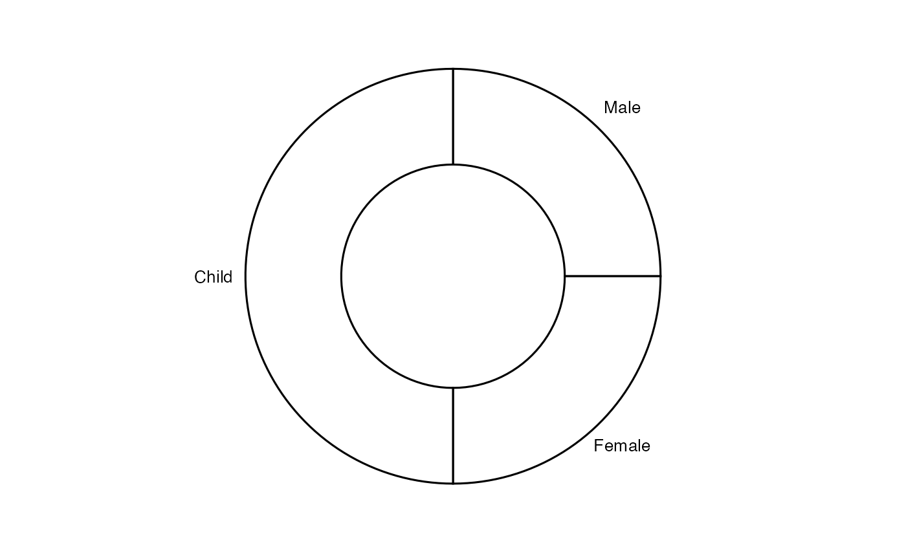
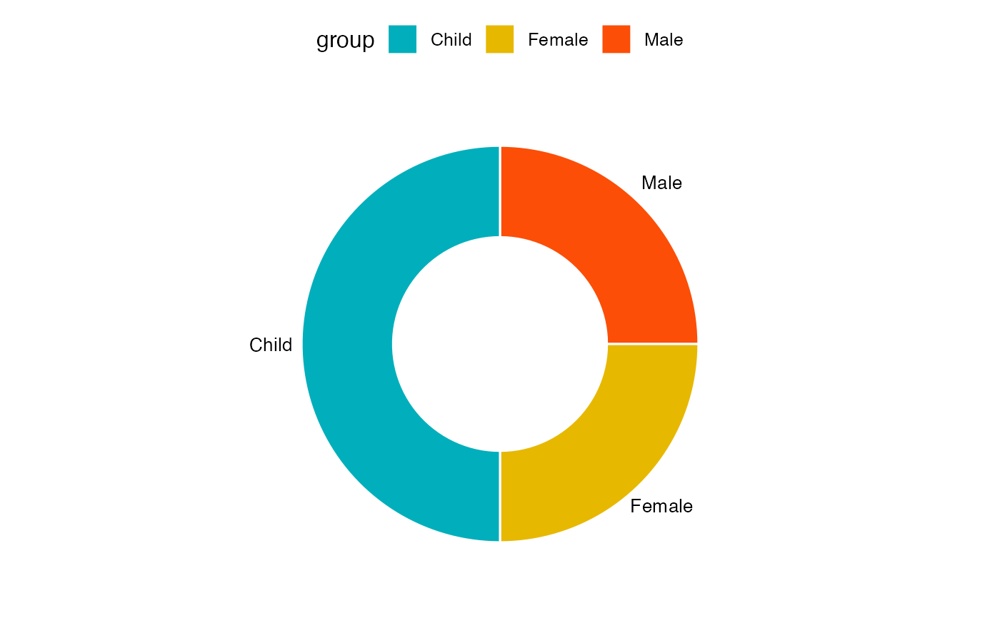
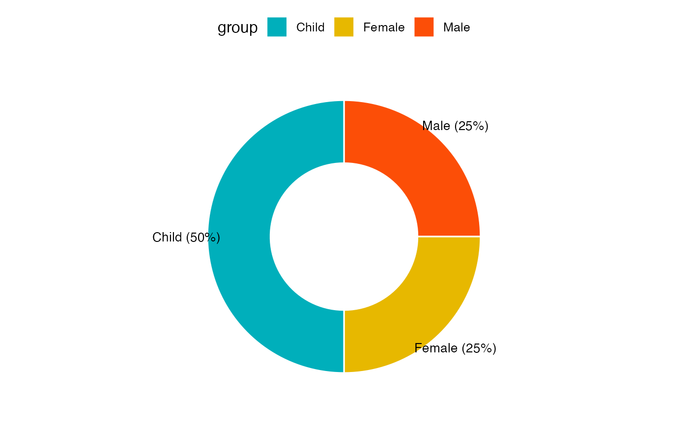
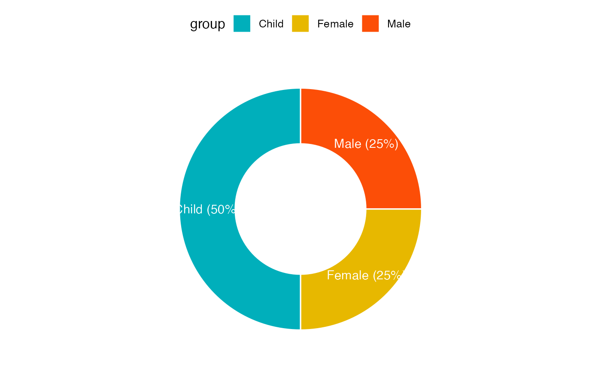

Create a donut chart.
Usage
ggdonutchart(
data,
x,
label = x,
lab.pos = c("out", "in"),
lab.adjust = 0,
lab.font = c(4, "plain", "black"),
font.family = "",
color = "black",
fill = "white",
palette = NULL,
size = NULL,
ggtheme = theme_pubr(),
...
)Arguments
- data
a data frame
- x
variable containing values for drawing.
- label
variable specifying the label of each slice.
- lab.pos
character specifying the position for labels. Allowed values are "out" (for outside) or "in" (for inside).
- lab.adjust
numeric value, used to adjust label position when lab.pos = "in". Increase or decrease this value to see the effect.
- lab.font
a vector of length 3 indicating respectively the size (e.g.: 14), the style (e.g.: "plain", "bold", "italic", "bold.italic") and the color (e.g.: "red") of label font. For example lab.font= c(4, "bold", "red").
- font.family
character vector specifying font family.
- color, fill
outline and fill colors.
- palette
the color palette to be used for coloring or filling by groups. Allowed values include "grey" for grey color palettes; brewer palettes e.g. "RdBu", "Blues", ...; or custom color palette e.g. c("blue", "red"); and scientific journal palettes from ggsci R package, e.g.: "npg", "aaas", "lancet", "jco", "ucscgb", "uchicago", "simpsons" and "rickandmorty".
- size
Numeric value (e.g.: size = 1). change the size of points and outlines.
- ggtheme
function, ggplot2 theme name. Default value is theme_pubr(). Allowed values include ggplot2 official themes: theme_gray(), theme_bw(), theme_minimal(), theme_classic(), theme_void(), ....
- ...
other arguments to be passed to be passed to ggpar().
Details
The plot can be easily customized using the function ggpar(). Read ?ggpar for changing:
main title and axis labels: main, xlab, ylab
axis limits: xlim, ylim (e.g.: ylim = c(0, 30))
axis scales: xscale, yscale (e.g.: yscale = "log2")
color palettes: palette = "Dark2" or palette = c("gray", "blue", "red")
legend title, labels and position: legend = "right"
plot orientation : orientation = c("vertical", "horizontal", "reverse")
Examples
# Data: Create some data
# +++++++++++++++++++++++++++++++
df <- data.frame(
group = c("Male", "Female", "Child"),
value = c(25, 25, 50)
)
head(df)
#> group value
#> 1 Male 25
#> 2 Female 25
#> 3 Child 50
# Basic pie charts
# ++++++++++++++++++++++++++++++++
ggdonutchart(df, "value", label = "group")

# Change color
# ++++++++++++++++++++++++++++++++
# Change fill color by group
# set line color to white
# Use custom color palette
ggdonutchart(df, "value",
label = "group",
fill = "group", color = "white",
palette = c("#00AFBB", "#E7B800", "#FC4E07")
)

# Change label
# ++++++++++++++++++++++++++++++++
# Show group names and value as labels
labs <- paste0(df$group, " (", df$value, "%)")
ggdonutchart(df, "value",
label = labs,
fill = "group", color = "white",
palette = c("#00AFBB", "#E7B800", "#FC4E07")
)

# Change the position and font color of labels
ggdonutchart(df, "value",
label = labs,
lab.pos = "in", lab.font = "white",
fill = "group", color = "white",
palette = c("#00AFBB", "#E7B800", "#FC4E07")
)
